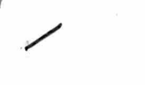

### Information Network Overview
#### I. Communication and Network Technology Development
#### II. Communication and Network Development and Evolution
1. **Communication Network Composition** - Multiplexing + Switching + Transmission
2. **Communication Network Classification** - Information Content: Telephone Network, Computer Network, Television Network - Multiplexing Methods: TDM, FDM, CDM, WDM - Switching Methods: Circuit, Packet, Frame Relay, ATM - Transmission Methods: Analog/Digital, Wired/Wireless, Fiber/Cable - Coverage Areas: Local Area Network, Metropolitan Area Network, Wide Area Network, Global Network, Personal Area Network, Body Area Network, Micronet
3. **Communication Network Development** - (1) Analog Communication -> Digital Communication (Long-Distance Transmission,抗Interference); Multimedia Communication (Multimedia Integration); Confidential Communication; High-Capacity (High Compression Ratio)) - Example 1: Analog Television - Example 2: Integrated Services Digital Network (ISDN); Computer - (2) Circuit Switching -> Packet Switching - Example 1: Telephone Network - Example 2: Packet Switching (IP, X.25), Fast Packet Switching (Frame Relay, ATM) - (3) Voice Communication -> Multimedia Communication - Example 1: Telephone Network - Example 2: Internet - (4) Fixed Communication -> Mobile Communication - Example 1: Local Area Network (Ethernet, FDDI), Wide Area Network (Internet) - Example 2: Wireless Local Area Network (802.11), Wireless Personal Area Network (Bluetooth, ZigBee, UWB), Wireless Ad-Hoc Network (Ad-Hoc),蜂窝网 (1G->4G), Wireless Sensor Network
#### III. New Requirements for Network Interconnection
1. **Development Directions:** - Interconnection of Heterogeneous Networks; Network Scalability; Network Reliability; Network Security - Information: Multimedia, Mobility - Switching: High-Speed, Flexible - Transmission: Digital, High-Speed - Network: Integrated, Intelligent, Personalized 2. **Constraints:** - Energy Consumption
### Communication Business Basic Characteristics and Network Layering Model
#### 1. Communication Business Characteristics Description
1. Communication Business Classification (1) By Service Type - User Information: Voice, Video, Image, Data - Control Information: Signaling, Network Management (2) By Service Content - Voice, Video, Image, Data (3) By Service Mode - End-to-End: Circuit Switching, Packet Switching - Service Generation Characteristics: Periodic, Random, Bursty - Bandwidth: Constant Bit Rate (CBR), Variable Bit Rate (VBR), Available Bit Rate (ABR), Unspecified Bit Rate (UBR) (4) By QoS - Real-time Services: Circuit Switching Network - Effectiveness: Occupies Bandwidth, Low Latency -> Dynamic Bandwidth Adjustment - Reliability: Lossless -> Increase Connection Rate - Non-real-time Services: Packet Switching Network - Effectiveness: Packet Transmission Efficiently Utilizes Bandwidth -> Reduce Latency, Increase Throughput - Reliability: Lossy
2. Communication Business Performance Requirements (1) Basic Requirements: - Effectiveness: Connectivity (Any, Fast); Cost-Effectiveness; Flexibility (Robustness); Scalability (应对规模扩展) - Reliability: Resilience to Single Point Failure and Traffic Attacks (2) Special Requirements: - Voice (Effectiveness) Delay Jitter: Very Small - (Reliability) Tolerates Loss: Some - Data (Effectiveness) Delay Jitter: As Small as Possible - (Reliability) Tolerates Loss: Not Tolerated - Image (Effectiveness) Delay Jitter: Very Small - (Reliability) Tolerates Loss: Very Small - Multimedia: Effectiveness + Reliability
3. Factors Affecting Communication Network Performance (1) Network Available Resources (Physical Layer): Bandwidth, Buffering, Power (2) Network Topology Structure (Link Layer): Load Balancing, Energy Efficiency (3) Network Routing Mechanism (Network Layer): Signaling and Advertisement (4) Network Traffic Control (Transport Layer): Congestion Control (5) Network Service Mode (Application Layer): Randomness (Network Performance Degradation Main Cause, Such as Bursty Packet Switching)
#### 2. Communication Network Layering Model and Cross-Layer Design
Cross-layer design's necessity: Improve network resource utilization, global optimization
### Channel Sharing and Multiple Access Techniques
#### I. Basic Principles of Digital Communication and Physical Interfaces
1. **Source:** (1) Sampling: Nyquist Sampling (2) Quantization: Analog-to-digital conversion, reducing quantization noise, logarithmic compression (3) Encoding: Source encoding (data compression), channel encoding (error detection and correction) (4) Modulation: For multiplexing and multiple access
2. **Channel:** (1) Wired Channels: Twisted Pair, Coaxial Cable, Fiber Optics (2) Wireless Channels: Shortwave, Ground Microwave Relay, Satellite
**Problems:** 1) Fading (Multipath & Time Delay) <--- Direct, Reflection, Scattering, Diffraction - Time Delay Spread: Selective Frequency Fading - Frequency Spread: Selective Time Fading - Angle Spread: Selective Space Fading 2) Time Variation (Time Delay & Doppler) <--- Motion - Solution: Diversity (Orthogonal Space)!!
3. **Protocol:** Automatic Repeat Request (ARQ)
#### II. Multiplexing & Multiple Access
1. **Multiplexing:** (1) Concept: Single user in the transmission end has exclusive access to the channel (2) Reasons: Efficient resource utilization; randomness and economic nature of resource demand; acceptable delay (3) Categories: Fixed Multiplexing; Statistical Multiplexing
2. **Multiple Access:** (1) Concept: Multiple users share the channel resources (2) Reasons: Shared medium (usually uplink) (3) Categories: Competitive Multiple Access; Coordinated Multiple Access
3. **Fixed Multiplexing and Coordinated Multiple Access:** (1) Concept: - Fixed Multiplexing: Fixed channel division, fixed use - Coordinated Multiple Access: Users obtain independent channel resources through orthogonal division within their domain (2) Characteristics: - Fixed Multiplexing: High efficiency, requires synchronization; suitable for streaming media - Coordinated Multiple Access: Good scalability; suitable for heavy load networks (3) Categories: 1) Frequency Division Multiplexing (FDM) & Frequency Division Multiple Access (FDMA) - FDM: Examples: Asymmetric Digital Subscriber Line (ADSL), Wavelength Division Multiplexing (WDM) - FDMA: Example: American AMPS - Concept: Users share the frequency spectrum - Characteristics: - Symbol period far greater than delay; low user capacity; no equalization required - No need for bandpass filters;
2) Time Division Multiplexing (TDM) & Time Division Multiple Access (TDMA)
TDM: Example: Synchronous Digital Hierarchy (SDH), Synchronous Optical Network (SONET)
TDMA: Example: Integrated Services Digital Network (ISDN)
Concept: Users share time slots
Features: - Symbol period depends on bandwidth and modulation technology; user capacity higher than FDMA; needs equalization - Requires switches for group transmission - Has protection slots and synchronization slots
3) Code Division Multiple Access (CDMA) & Code Division Multiple Access (CDMA) & Interleaved Multiple Access (IDMA)
CDM:
CDMA: Example: 3G
Concept: Users distinguished by different spreading sequences (code orthogonal) - combating random errors; users interwoven in time domain - combating burst errors
Features: User capacity higher than TDMA;
IDMA:
Concept: Users distinguished by different interleaving sequences (code uncorrelated) - distinguishing
Features: Users not distinguished by spreading sequences
4) Orthogonal Frequency Division Multiplexing (OFDM) & Orthogonal Frequency Division Multiple Access (OFDMA): Orthogonal Frequency Division
OFDM: Example: WLAN
OFDMA: Example: 3G-LTE, 4G
Concept: QAM (orthogonal) + FD (frequency division)
Features: - User capacity higher than CDMA; - Reduces multipath interference (channel fading becomes flat); reduces adjacent channel interference (code element duration increases)
5) Space Division Multiple Access (SDMA) and Space Division Multiple Access (SDMA)
SDM:
SDMA: Example: TD-SCDMA, optical space division
Concept: Users separated in space
Features: - Can be used with any modulation method, combined with previous multiple access technologies - Requires directional antennas, multiple beam antennas, MIMO (multiple input multiple output)
4. Statistical Multiplexing and Competitive Multiple Access
(1) Concept: - Statistical Multiplexing: Fixed channel division, not fixed usage - Competitive Multiple Access: Users obtain channel resources through non-coordinated or partial coordination
(2) Features: - Statistical Multiplexing: Has labels, no synchronization; suitable for bursty services - Competitive Multiple Access: Simple, poor scalability; suitable for lightly loaded local area networks
(3) Classification: 1) Non-coordinated: Asynchronous Time Division Multiplexing (ATDM): Asynchronous Asynchronous Example: ATM Features: Only applicable to packet networks, fixed packet length 2) Non-coordinated: Pure Competitive Access Technology (ALOHA with ALOHA) Example: Pure ALOHA -> Time Slot ALOHA -> Carrier Sense Multiple Access with Collision Detection (CSMA/CD)
### Features: - Simple protocol; no synchronization; low throughput; interframe ALOHA throughput is twice that of pure ALOHA
3) Non-coordinated: Carrier Sense Multiple Access with Collision Avoidance (CSMA)
Example: 0坚持: Listen to collision, wait for random time before listening again, idle then transmit p坚持: Listen to collision, continuous listening, idle then transmit with probability p 1坚持: Listen to collision, continuous listening, idle then transmit with probability 1
### Classification: - Collision Detection (CD): Example: LAN - Concept: Detect collision immediately, cannot avoid - Collision Avoidance (CA): Example: WLAN - Concept: Cannot detect during transmission, avoid collisions as much as possible
### Issues: - Hidden Node Problem: Sender does not detect collision (A: Transmitting --- B: Receiving --- C: Hidden Node) - Exposed Node Problem: Receiver incorrectly detects collision (A: Receiving --- B: Transmitting --- C: Exposed Node) - Solution: RTS (request to send) / CTS (clear to send) coordination mechanism
### Characteristics: - Terminal inquires if it has not received a response within the specified time, then it will transmit - The more nodes there are, the lower the channel utilization; the longer the data packet, the higher the channel utilization
4) Partially coordinated: Round-robin access, reservation access, etc. Example: Token ring, bit map method
### Reuse Technique: Example: ATM edge router - Concept: Divide an information flow into multiple parallel streams, each transmitted through a separate channel (such as T-1 or E-1 lines) simultaneously - Characteristics: Load balancing, reduced congestion, improved reliability
### Network Layer Functions
1. Addressing: Finding network nodes 2. Switching: Routing data packets from input to output 3. Routing: Calculating a path from source to destination 4. Heterogeneous network interconnection 5. Providing services to the transport layer: Circuit-switched (virtual circuit) or connectionless (datagram) services 6. Flow control: Traffic description, QoS negotiation, congestion control, rate control
### Circuit Switching
1. Concept: Establishing a connection from source to destination, with reserved resources (such as bandwidth, switch capacity) for transmission 2. Characteristics: - (1) Circuit switching (connection-oriented, fixed link from source to destination, end-to-end sequential transmission) - (2) Real-time (primarily used for voice and video) - (3) Simple implementation - (4) Low line utilization (fixed reuse, coordinated multi-access)
3. Implementation: Circuit switching device: Establishes a circuit connection upon request - (1) Space division switching (parallel) - (2) Time division switching (serial) - (3) Time-space-time switching (TST): Example: ATM switching - (4) Soft switching - Concept: Separating call control functions and media gateway, software controlling call functions - Characteristics: - (1) High flexibility, easy to adapt to new QoS - (2) Limited emergency handling capability
4. Signaling: Examples: Dial tone, call display, digital trunk control exchange (7th signaling system: SS7) - Concept: Signals used in communication to control transmission, including network and terminal status information - Characteristics: Overhead in addition to data - Classification: In-band signaling (same frequency as information), out-of-band signaling, Common Channel Signaling (CCS) transmitted signaling
### Issues
1. Congestion (call blocking): Internal congestion (no allocated lines); external congestion (no allocated time slots) - Concept: Crossbar in space division switching causing internal congestion - Characteristics: Due to fixed routing for each connection, can predict whether the internal structure of the switch will cause congestion
2. Speed - Concept: Time-division switching requires higher frame rates in time slot interconnection (TSI) - Characteristics: Due to limited read/write memory access time, new technology needs to replace pure time-division switching
### Solutions
1. Congestion: Design multi-level structure switches without internal congestion 2. Speed: Space-time mixed switching
### Packet Switching
1. Concept: Source divides information into packets with destination addresses in the header, for connectionless or connection-oriented transmission
(2) Difficult to ensure QoS (primarily used for data services)
(3) Flexible, high reliability
(4) High line utilization (statistical multiplexing, contention multi-access)
3. Implementation: Data packet/frame/Cellular switch: Forward data from one link to another link
(1) Datagram switching
Concept:
1) Router maintains routing table
2) Different destination addresses forwarded to different ports
Features: Connectionless (no resource reservation)
Good: Router does not need to know the entire topology, does not need to wait for connection establishment
Bad: Routing table grows larger
(2) Virtual Circuit switching
Concept:
1) Router maintains routing table
(Permanent Virtual Circuit (PVC): Connection is always in the routing table; Switched Virtual Circuit (SVC): Connection is established when communication is requested)
2) Different VC numbers forwarded to different ports, VC number changes during forwarding
Features: Connection-oriented (resources reserved when connection is established)
Good: Small routing table, fast routing
Bad: Each connection establishment or disconnection requires changing the routing table
(3) X.25
Concept: Physical layer, data link layer, packet layer
Features: Connection-oriented (resources reserved when connection is established); Each layer has error detection and correction mechanisms
Good: Reliable
Bad: Slow
(4) Frame Relay (frame relay)
Concept: Frame (longer packet) relay (intermediate error detection, end error detection)
Features: Connection-oriented (resources reserved when connection is established); Only end error detection; Longer packet
Good: Fast
Bad: Requires more reliable transmission
(5) ATM switching
Concept: ATM cell relay (fixed-length short packet), virtual path (VP) contains multiple virtual channels (VC)
Features: Connection-oriented (resources reserved when connection is established); Only end error detection; Fixed-length cells
Good:
1) Predictable short delays, low jitter
2) Easy to segment
3) Fixed bandwidth
4) Simplified buffer design, scalable parallel transmission
Bad:
1) Cell header overhead is large
2) Fragmentation and reassembly costs high
3) Fixed length leads to bandwidth waste
4) Complex implementation
4. Issues
1) Blocking (cannot input from switch to output: call blocking): Internal blocking (no allocation of lines); Output blocking (no allocation of time slots)
### Concept: Self-routing Banyan Switches Have Internal Congestion (Blocking) Issues
**Characteristics:** Due to the non-fixed routing of each link, it is impossible to predict congestion. When congestion occurs, packets can only be buffered or dropped.
(2) Speed
**Concept:** Store-and-forward mechanism is slow
**Characteristics:** Error detection and correction mechanism is complex
### Resolution
(1) Congestion
1) Input/intermediate/output buffering -> expensive; hard to achieve zero packet loss rate
2) Arbitration of each data packet's forwarding direction -> slow; complex
3) Parallel switching lines -> expensive; if a Banyan switch has k levels, the output buffer speed must be k times that of the input. Use Batcher sorting + Banyan switch!
Good: Symmetric structure can use the same modules
Bad: Multicast (broadcast) still causes congestion; multi-level structure leads to long transmission delays; uniform port rates; high power consumption; memory speed cannot keep up with processor speed
(2) Speed: Frame relay; ATM switching
### Five. Multi-protocol Label Switching (MPLS)
1. Concept: Meaning of labels:
(1) X.25: LCN |-> statistical multiplexing
(2) Frame relay: DLCI |-> statistical multiplexing
(3) ATM labels: VP label VPI; VC label VCI |-> statistical multiplexing
(4) Time-division multiplexing: time slots |-> fixed multiplexing
(5) Wavelength division multiplexing: wavelength, frequency |-> fixed multiplexing
2. Characteristics: Edge of the network uses IP routing, core of the network uses label switching (MPLS labels attached to packet headers)
Good:
1) Based on a single forwarding mechanism, it can support multiple types of forwarding within the same network 2) Fast due to label routing 3) Through the integration of link layer (ATM, frame relay) with network layer routing technology, solving the problem of Internet expansion and ensuring QoS transmission in IP networks
Bad: Complex
### Six. Optical Switching Technology
1. Optical Circuit Switching (OXC)
Static configuration or end-to-end signaling
2. Optical Burst Switching (OBS)
Reserve bandwidth switching, no need for buffering
3. Optical Packet Switching (OPS)
Store-and-forward switching, needs buffering
4. Automatic Switching Optical Network (ASON)

### Routing and Mobility Management Techniques
#### I. Basic Principles of Routing
1. Concept: Finding the path from source to destination (1) Information collection (topology, addresses) (2) Routing algorithm (optimization methods, decision time, decision location)
3. Circuit Switching Routing (1) Characteristics: Fixed load; path reservation; single center control (2) Classification 1) Hierarchical routing 2) Backup routing 3) Dynamic non-hierarchical routing 4) Self-adaptive real-time routing
4. Packet Switching Routing (1) Characteristics: Unfixed load; no path reservation; distributed control (2) Classification 1) Datagram: Destination address determines the next hop; routing may change during transmission 2) Virtual Circuit: VC determines the next hop; path fixed during call setup and maintained throughout the call
#### II. Information Collection (Topology, Addresses)
Flooding (flooding) Prim algorithm, Kruskal algorithm Each independent node -> Spanning tree (spanning tree) -> Minimum spanning tree
#### III. Routing Algorithms (Optimization Methods, Decision Time, Decision Location)
1. Concept (1) Measurement: Delay, throughput, hops (2) Protocol: How to inform other nodes of the information (3) Calculation: Calculate the shortest path from a single source based on the acquired information
2. Classification (1) Distance Vector Method Concept: Bellman-Ford Characteristics: Distributed algorithm; three-order complexity; only exchanges information with neighbors Good: Local information exchange, small amount of maintained information Bad: Convergence issues when network state changes or nodes fail (2) Link State Method Concept: Dijkstra Characteristics: Centralized algorithm; two-order complexity; exchanges information with all nodes Good: All nodes know global information, faster convergence, easier discovery of new topologies and faulty nodes, QoS guaranteed Bad: Each node stores a large amount of information (3) Another: Floyd-Warshall; three-order complexity
3. Implementation (1) AS internal routing
### Example: OSPF (Link State), RIP (Distance Vector)
(2) AS Inter-domain Routing
Requirements: Reachability, Address Aggregation, Topological Flexibility, Focus on Policy
Example: EGP, BGP-4
### Three, Mobility Management in Stateless Networks
1. Problem: IPv4 Address Allocation Pressure; Routing Tables Increasing in Size
2. Solution: IPv6; Stateless Inter-domain Routing
3. Problem: Host Unreachable After Movement
4. Solution: Tunneling Technology; Foreign Agent
- Reception: Register Foreign Agent in Local Agent -> Local Agent Uses Tunneling Technology to Forward -> Foreign Agent Relays to Mobile Host - Transmission: Use Local (Home) Address Directly for Communication with Remote End, No Need for Encapsulation
5. Problem: Foreign Agent's Availability and Stability
6. Solution: Decouple Terminal Identifier (ID) and Location (Locator) from Foreign Agent
- Reception: Register Foreign Address in Local Agent -> Local Agent Uses Tunneling Technology to Forward -> Mobile Host Can Decapsulate - Transmission: Use Local (Home) Address Directly for Communication with Remote End, No Need for Encapsulation
### Four, Mobility Management in Mobile Ad-Hoc Networks
1. Concept: Stateless, Dynamic Topology; Distributed Routing, Dynamic Resource Allocation (Bandwidth, Power, Routing)
2. Characteristics: - FD (Frequency Division) / TD (Time Division) / CD (Code Division) + SD (Space Division) - Simple Deployment - Suitable for Small-Scale Emergency Communication, Low Rate, Low Traffic
3. Improving Capacity: - Inter-node Interaction Weight Increase, Self-Organized Discovery of Transmission Opportunities
4. Problem: Fixed Stateless Network Routing Protocols are Inapplicable
- (1) Topology Changes - (2) Asymmetric Upstream and Downstream - (3) Redundant Connections - (4) Interference from Other Nodes
5. Solution: Wireless Ad-Hoc Network on Demand Flat Distance Vector Routing Protocol (AODV): - Broadcast RREQ -> Receive - { - if (Destination Node) - { - if (First Reception) - Receive, Inform Sender via Found Path - else - Discard; } - else - Broadcast in Broadcast Packet with Current Node's Address; }


(1) Establish when communication demand arises
(2) Source broadcast connection request to discover routing path
(3) Maintain node sequence number and broadcast id
### Five. Mobile Management in Cellular Networks
1. Concept: Fixed network structure, cell-based; centralized location management and handoff management
2. Features: - FD (Frequency Division) / TD (Time Division) / CDMA (Code Division) + SD (Space Division) - High installation costs - Suitable for large-scale communication, high capacity, and high quality
3. Improving capacity: - Increase cell capacity: voice activation, source compression, high-efficiency modulation,扇区化 (sectorization) - Use more址址 (address) technology: FDMA -> TDMA -> CDMA - Reduce cell area: microcells, picocells
4. Issue: Location management
5. Solution: Coverage methods, local attachment methods; authentication, location update, call forwarding
6. Issue: Handoff management - (1) Intra-cell handoff - (2) Inter-cell handoff - (3) Inter-system handoff
7. Solution: - Hard handoff; soft handoff (example: CDMA, improving QoS); reverse handoff; forward handoff - Macrocell covers multiple microcells - Integrate heterogeneous fixed and mobile networks

### Network Traffic Control Techniques
#### 1. Network Congestion and Traffic Control
1. **Challenges in Broadband Networks: Network Resource Management and Service Quality Control**
2. **QoS**
(1) **Concepts:**
1.1) **General Parameters:** Bandwidth, delay, jitter, packet loss rate
1.2) **Specific Transmission/Application Parameters:** Jitter, important data packet loss rate
1.3) **User Perspective (Network Edge):** Connectivity, flexibility, security
1.4) **Network Perspective (Network Core):** Resource utilization, redundancy for reliability
(2) **Classification:**
2.1) **Strict:** Hard
2.2) **Soft**
2.3) **Perceptual**
2.4) **Best-Effort Service Model:**
2.5) **Integrated Service (Int-Serv) Model:**
2.6) **Differentiated Service (Diff-Serv) Model:**
(3) **Necessity:**
3.1) **Traffic Growth Faster Than Bandwidth Growth:** Bandwidth expansion cannot solve congestion
3.2) **Memory Changes Are Cheaper:** Long delays cause packet loss
3.3) **Connection Device Changes Are Cheaper:** Limited bandwidth in wireless environments leads to congestion
3.4) **High-Speed Routers Are Cheaper:** Low-speed links are more congested
3.5) **Network Edge and Wireless Environment Bandwidth is Limited**
3.6) **End-to-End Bandwidth is Not Infinite:** There are bottleneck nodes
3.7) **Interzone Switching and Mobile Host Roaming Require Strict QoS**
3.8) **QoS Differentiation and Tariff Require QoS Assurance**
(4) **Costs:**
4.1) **Traffic Control and Management**
4.2) **End-to-End QoS Assurance**
4.3) **Wireless Environment Bandwidth Assurance**
#### 2. Congestion
(1) **Concept:** For established connections and new connection requests, the network cannot guarantee the agreed QoS
2.1) **No Congestion:** Managed
2.2) **Congestion:** Avoided
2.3) **Severe Congestion:** Recovered
(2) **Characteristics:** Congestion is not buffer overflow, not long delays
#### 3. Single-Business Network Traffic Control and Resource Allocation
1. **Circuit Switching Network Traffic Control and Resource Allocation**
1.1) **Characteristics:** To ensure QoS, optimized bandwidth (example: 64 kbps)
1.2) **QoS:** For voice optimization, needs to establish connections, may block, no queue delay
1.3) **Traffic Control:** When there are insufficient resources, block new connections; dynamic replaceable routes; trunk lines for interzone switching and broadband connections reserved resources
2. **Packet Switching Network Traffic Control and Resource Allocation**
(1) **LAN/MAN (Local Area Network/ Metropolitan Area Network)**
1.4) **Characteristics:** Shared medium free access

QoS: For data optimization, best effort work, may have delay jitter, may drop packets.
Traffic control: competition/avoidance (e.g., Ethernet CSMA/CD); competition/reservation (e.g., ATM cell reservation in wireless ATM); polling (e.g., FDDI token ring).
(2) PS-based WAN (Wide Area Network)
Features: store-and-forward, time-out retransmission
QoS: For data optimization, throughput, may have delay jitter, may drop packets.
Traffic control: window-based flow control; traffic shaping; buffer management.
(3) Frame Relay (FR)
Features: end-to-end retransmission and error correction (intermediate nodes do not perform error correction), clear congestion notification.
QoS: For high-speed data optimization, high throughput, guaranteed rate, low queue delay.
Traffic control: forward congestion notification and backward congestion notification, selective packet discard (DE).
III. Multi-service network traffic control and resource allocation
1. ATM network traffic control and resource allocation
Features: state-based; high transmission speed; unpredictable traffic patterns and scales; multiple QoS requirements (sensitive to delay and packet loss); needs to adapt to different network scales (LAN and WAN).
QoS:
(1) CBR: Constant bit rate. Real-time service.
Traffic demand: PCR (peak cell rate)
Service demand: CLR (packet loss rate), CTD/CDV (delay)
(2) rt-VBR: Real-time variable bit rate. Real-time service. Generally used for image services.
Traffic demand: PCR (peak cell rate), SCR (average cell rate)
Service demand: CLR (packet loss rate), CTD/CDV (delay)
(3) nrt-VBR: Non-real-time variable bit rate. Non-real-time service.
Traffic demand: PCR (peak cell rate), SCR (average cell rate)
Service demand: CLR (packet loss rate)
(4) ABR: Available bit rate. Non-real-time service. Generally used for data services.
Traffic demand: PCR (peak cell rate), MCR (minimum cell rate), feedback
Service demand: CLR (packet loss rate)
(5) UBR: Unspecified bit rate. Non-real-time service. Requires peak cell rate.
Traffic demand: PCR (peak cell rate)
Service demand: None
Traffic control:
(1) Access control (CAC - connection admission control)
1) At connection admission, declare traffic demand and service requirements: CBR/VBR/ABR/UBR
2) Based on network performance, decide whether to accept the QoS request for this transmission. If accepted, allocate a path and bandwidth for the transmission. Method: general cell rate algorithm
leaky bucket
double leaky bucket (one measures peak rate, one measures average rate)
Issue: declared values and measured values may not be consistent
(2) Network monitoring (UPC - usage parameter control)
1) Traffic policing: check if declared values and measured values are consistent
Method: no general cell rate algorithm
2) Traffic shaping: end device will reformat the data, ensuring that the traffic demand and service requirements are met. Method: token bucket (token bucket), buffering (buffering), spacing (spacing)

(3) Network resource management (network resource management)
1) Scheduling (scheduling)
- DFBA (difference fair buffer allocation) - Round Robin
2) Queuing (queueing)
3) Virtual path resource reservation (virtual path resource reservation)
(4) Selective discard (selective cell/frame/packet discard)
1) SCD (selective cell discard): CLP (cell loss priority) low cells are discarded first.
2) SFD/SPD (selective frame/data packet discard)
- PPD (partial packet discard): Discard part of the packet when the buffer overflows. - EPD (early packet discard): Discard the entire packet if the buffer exceeds the threshold.
(5) Feedback control (feedback control): Suitable for ABR (available bit rate)
1) Source: Based on network control information to determine the sending rate. - RM (resource management information): Periodic probe packets, each switch can write its own congestion status into the packet and return it to the source, informing the source of the network's congestion status. 2) Switch: Writes feedback information into RM to control the source rate. - VS-VD (virtual source-destination): Divides the network into multiple inlets and outlets based on switches as nodes, implementing multi-level flow control to reduce the RM cycle time. 3) Destination: Congestion information is reported to the source.
2. In wired Internet,尽力为服务模型 (Best-Effort: default) of traffic control and resource allocation
Features: Does not guarantee delay, reliability; IP: stateless; TCP: stateful
QoS: Best-Effort
Traffic control:
1) Relying on timeouts or repeated confirmation of the same packet to determine congestion. 2) Relying on window rate limiting, estimating timeout and round-trip time. 3) Relying on AIMD (additive increase, multiplicative decrease) to control the window size: slow start + congestion avoidance -> fast retransmit + fast recovery.
3. In wired Internet, the integrated service model (Int-Serv) of traffic control and resource allocation
Features: Stateful; requires resource reservation; guarantees multiple QoS; high complexity; poor scalability
QoS: Int-Serv
Traffic control: Resource reservation protocol RSVP
4. In wired Internet, the differentiated service model (Diff-Serv) of traffic control and resource allocation
Features: Stateless; no resource reservation; weak QoS guarantee; simple implementation; good scalability
QoS: Diff-Serv
Traffic control: IPv4 type of service domain/IPv6 differentiated service domain's 6-bit differentiated service model code point DSCP
5. In wireless Internet, traffic control and resource allocation
Features:
1) Fading: 1) Low bandwidth, high error rate: congestion loss, error loss. 2) Power fading: hidden terminal, exposed terminal.
2) Variable parameters: 1) Within the cell: time variation, position variation. 2) Between cells:越区切换, re-routing, signaling resource consumption.
QoS challenges:
(1) Traffic control
1) Bandwidth delay product is large
2) Unfair bandwidth allocation for long delays
3) Buffer overflow, packet loss, and handover will cause packet loss/call drop, wired TCP cannot distinguish!
(2) Retransmission mechanism
1) Low retransmission efficiency
2) Limited ability of retransmission confirmation mechanism to detect lost packets
(3) Timing estimation
1) Unable to adapt to sudden changes in end-to-end delay
Flow control:
(1) Transmission layer solution: Differentiate between buffer overflow, packet loss, and handover causing packet loss/call drop
Example: TCP Reno
(2) Link layer solution: Use a wireless access point (remote proxy) to isolate the sending end from the wireless environment
Example: Split TCP (split TCP/indirect TCP)
(3) Comparison:
1) ACK: Re-transmit all packets after the first error
2) SACK: Re-transmit erroneous packets, high efficiency
3) Wireless SACK: Reduce the number of re-transmissions caused by high error rates and handovers, improving efficiency
Summary and展望
One, technology development:
Overhype: High expectations -> over-criticism: Many implementation issues -> adopt/accept(accelerate): Adapt and accept
-> Leapfrogging development: Rapid development
Origin: Technology leads the market
Large investment, little innovation
Less centralized resource control
Network guides innovation
Spends money on technology
Market leads technology
Innovation is everywhere
Multiple resources
End device guides innovation
Many choices, free products have value
IP's success: Standards rather than technology, expectations of investors
Two, problems and challenges
Problems:
Three-network convergence: Telecommunications network, television network, and Internet or three-network unification: Providing three services on the Internet
NGI: The extension of the current Internet, with IP as the core or NGN: Emphasizing QoS, business and transmission separation
Intelligence at the edge or intelligence at the core
Challenges:
Multimedia services: Real-time, QoS
Wireless services: TCP window errors, end-to-end control, mobility management
Commercialization: QoS, etc.
Protocol complexity

Spectrum Resource Crisis
Trust Crisis
Energy Crisis (Energy growth outpaces business growth): Mobile communication, data centers, core routers, commercial computers, base stations
Technology development -> Unit performance energy consumption decreases, does not mean total energy consumption decreases -> need to view systemically
Theoretical Challenges
"Go all out, complex periphery, core simplicity" concept's applicability
Formal description, verification, testing, and reusability
Poisson process, Markov process limitations in describing data flow
Decoupling host's locator and identifier (MAC: identifier) (IP: identifier+locator)
IPv6: Real-time, routing selection, smooth transition
Law:
Moore: Microprocessor speed doubles every 18 months
Gilder: Bandwidth doubles every 6 months
Metcalfe's Law: Network value is proportional to the square of the number of users
Information, exchange, transmission, network trends: Ubiquitous networks, storage, intelligence, and perception, see Chapter One
Trend towards integration and diversified access
Trend towards intelligence
Computing everywhere
Communicating everywhere: Mobile communication, mobile networks, mobile multimedia
Cloud computing
User count growth, traffic increase
Fiber to the home (not only core routers, edge routers also increase in energy consumption)
Coverage priority -> capacity priority -> energy efficiency priority
Summary
No connection: MPLS can be introduced to have connection-oriented advantages
Multiplexing: Statistical multiplexing and competition multi-address (for data packet switching and virtual circuit switching)
Exchange: Stateless; unordered arrival; destination address -> large routing table; network changes when routing table entries change; strong error recovery capability; simple equipment;
Transmission: No resource reservation; difficult to guarantee QoS; delay jitter; delay hard to predict; good flexibility and scalability; high line utilization; data oriented connection;
Multiplexing: Fixed multiplexing and coordinated multi-address (for circuit switching, virtual circuit switching is not)
Exchange: Stateful; ordered arrival; connection number -> small routing table; routing table changes when connection establishment or disconnection; poor error recovery capability; complex equipment;
Transmission: Resource reservation; easy to guarantee QoS; small delay jitter; delay easy to predict; poor flexibility and scalability; low line utilization; voice and video
Wireless issues:
1. Wireless channel characteristics: Chapter Two
2. Mobility management: Chapter Five
3. QoS and traffic control: Chapter Six
Fiber mesh network vs. mobile ad hoc network:
1. Concept, characteristics, and mobility management: Chapter Five
Circuit switching vs. packet switching:
1. Concept and characteristics: Chapter Four
2. Routing: Chapter Five
3. QoS and traffic control: Chapter Six